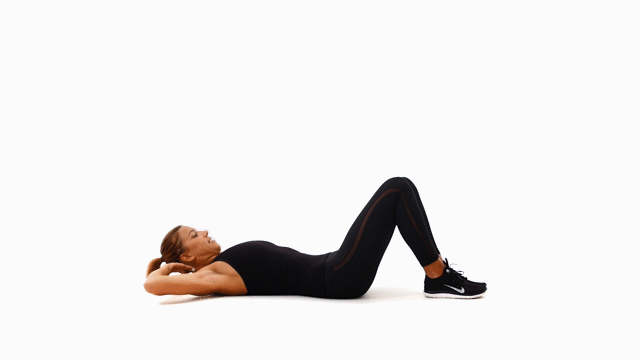
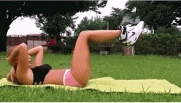
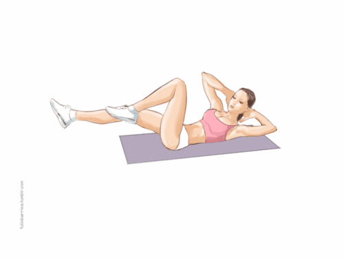
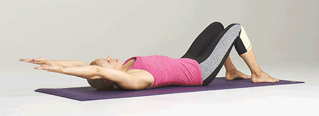
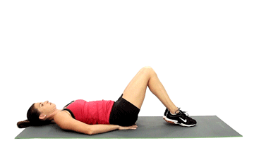
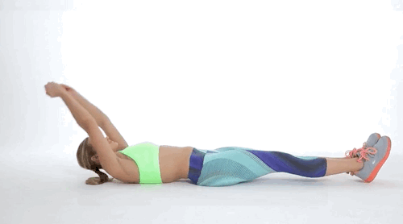
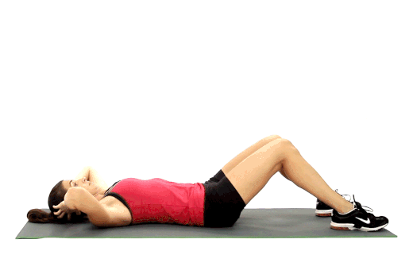
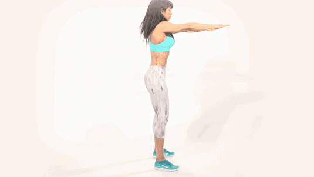
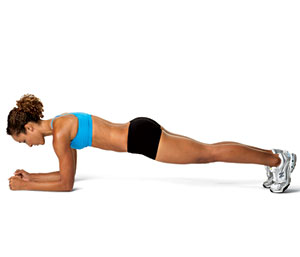

Regular Crunches
V up Crunches
Bicycle Crunches
Twisting Crunches
Reverse Crunches
Long arm Crunches
Sit Ups
Squats
Plank
| Day 1:
10 Sit ups 15 Bicycle Crunches 30 Squats |
Day 2:
10 Sit ups 3x 5 V-Up Crunches 30 Squats |
Day 3:
15 Sit ups 20 Reverse Crunches 35 Squats |
Day 4:
15 Sit ups 20 Regular Crunches 40 Squats |
Day 5:
20 Sit ups 20 Long Arm Crunches 40 Sec Plank |
Day 6:
20 Sit ups 25 Twist Crunches 45 Squats |
| Day 7:
25 Sit ups 25 Bicycle Crunches 50 Squats |
Day 8:
25 Sit ups 5x 5 V-Up Crunches 50 Squats |
Day 9:
30 Sit ups 30 Reverse Crunches 55 Squats |
Day 10:
30 Sit ups 30 Regular Crunches 55 Squats |
Day 11:
35 Sit ups 30 Long Arm Crunches 55 Squats |
Day 12:
35 Sit ups 35 Twist Crunches 1 Minute Plank |
| Day 13:
40 Sit ups 35 Bicycle Crunches 60 Squats |
Day 14:
40 Sit ups 7x 5 V-Up Crunches 60 Squats |
Day 15:
45 Sit ups 40 Reverse Crunches 65 Squats |
Day 16
45 Sit ups 40 Regular Crunches 65 Squats |
Day 17:
50 Sit ups 40 Long Arm Crunches 70 Squats |
Day 18:
50 Sit ups 40 Twist Crunches 70 Squats |
| Day 19:
55 Sit ups 45 Bicycle Crunches 75 Squats |
Day 20:
55 Sit ups 9x 5 V-Up Crunches 75 Squats |
Day 21:
60 Sit ups 45 Reverse Crunches 75 Squats |
Day 22:
60 Sit ups 45 Regular Crunches 80 Squats |
Day 23:
65 Sit ups 50 Long Arm Crunches 80 Squats |
Day 24:
65 Sit ups 55 Twist Crunches 80 Squats |
| Day 25:
70 Sit ups 60 Bicycle Crunches 85 Squats |
Day 26:
70 Sit ups 10x 5 V-Up Crunches 85 Squats |
Day 27:
75 Sit ups 65 Reverse Crunches 90 Squats |
Day 28:
75 Sit ups 70 Regular Crunches 90 Squats |
Day 29:
80 Sit ups 70 Long Arm Crunches 90 Squats |
Day 30:
80 Sit ups 80 Crunches 100 Squats |